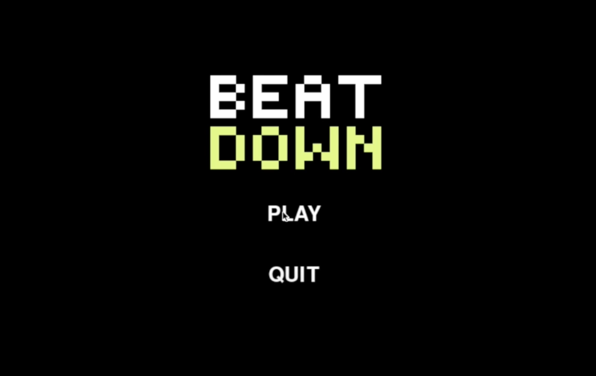
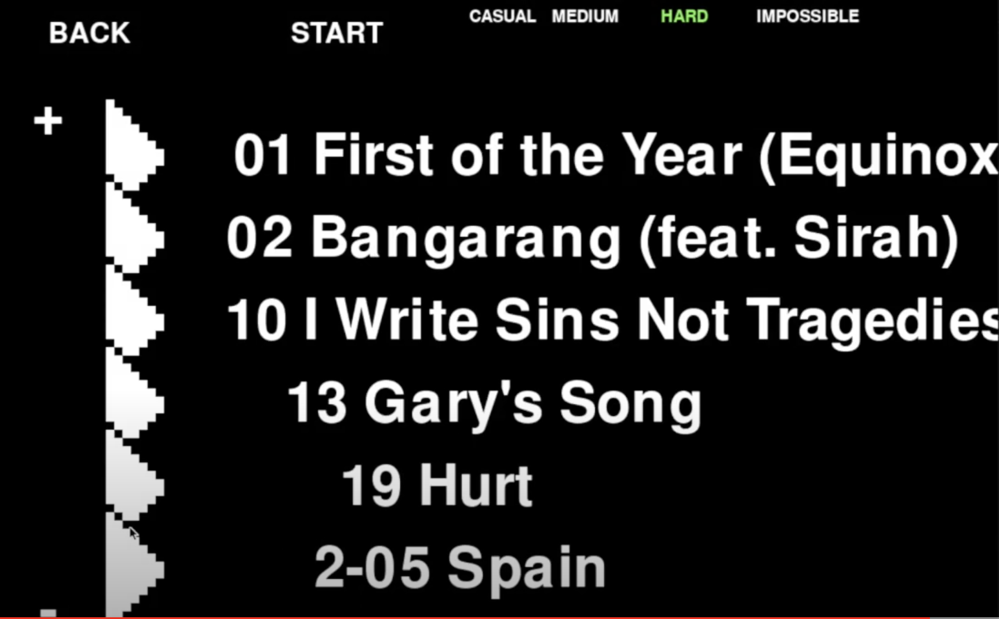
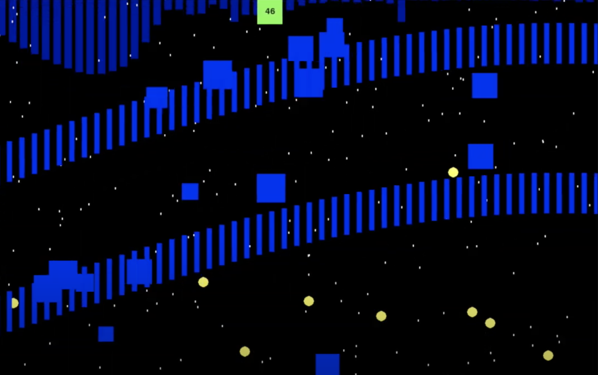

Fall 2018 - Game Programming & Design (PyGame)
Overview
BEATDOWN is a videogame that can analyze a music file and generate a level that the player needs to complete while listening to the music.
This is my term project for Fundamentals of Programming 15-112 at Carnegie Mellon.
I wrote all of the game logic and graphics code using PyGame and Python's built-in libraries.
The player is a green square that moves around with the computer’s mouse movement, and the enemies are larger squares that fly across the screen with the music.
Check out the
video
that I made.
Screenshots



Competitive Analysis
I took much inspiration for the concept of BEATDOWN from a
video game called Audiosurf. In Audiosurf, the player can
select music files on his/her computer and surf through cool
looking levels to the beat of the music. I thought
that this is a great idea because it leverages the
music that they already enjoy.
For my project, I didn't want to analyze the music with the
same complexity as Audiosurf. I just wanted my project to
be able to detect the beat of the music and generate enemies
based on the ‘intensity’ of the music. Instead of the player
surfing through a pretty 3d environment, the player will
be a green square that is controlled by the mouse movement.
BEATDOWN is different from other rhythm games like Dance
Dance Revolution or Osu because there is no way to fail
a level. Instead, the player will receive a score at the
end of the song based on how many object he/she successfully
dodged. But, no matter how bad that player is at playing the character,
the player should be able to continue.
Algorithmic Plan
The most difficult part of the project is making the music synched up with the animations displayed by PyGame. Here are the steps I am going to take to synch the music with the animations:
-
Analyze the music file for the song
-
Gather data about the song’s loudness and frequency spectrum for every frame of
animation that we need. In out case, we want the game to run around 60 frames
per second.
-
Play the music..
-
To play the music and run the graphics animation at the same time, I have to use Python’s ‘threading’ module.
-
Every 1/60th of a second, my music thread will send information to my animation code.
-
Synch the music with the animation.
-
At every animation frame, the game will
interpret data about the music currently
playing, and spawn enemies accordingly. If
a section of music is louder than other sections,
then more enemies will be spawned. Since we
gathered data about the music file already,
all we need to do is read a neatly formatted
list with the data we need.
-
If the music is currently ‘on beat’, the enemies will move faster.